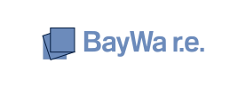
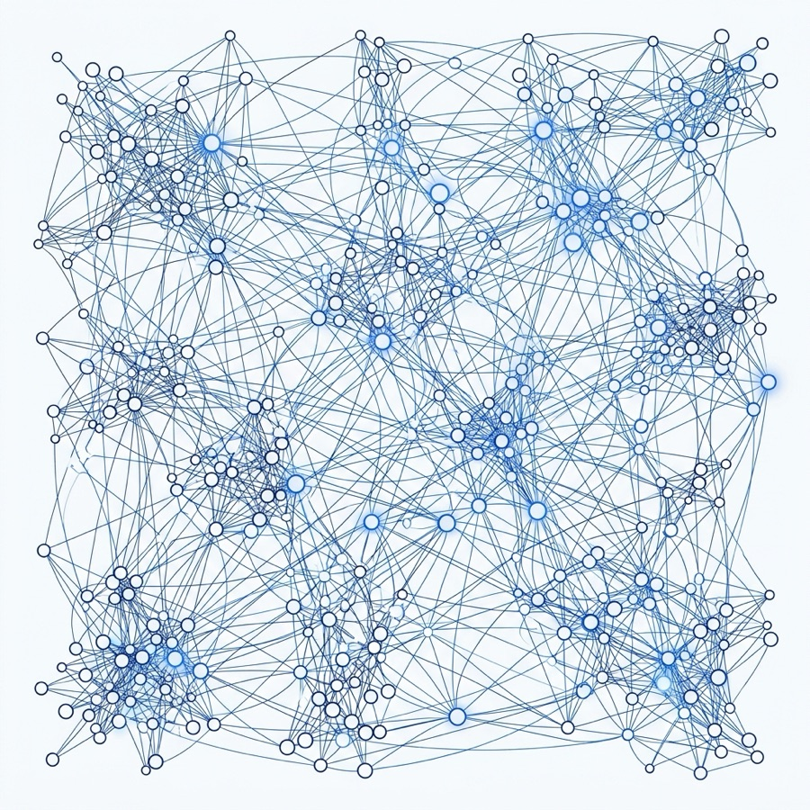

Fábricas de software sin criterio de negocio
Construyen lo que les pides, no lo que resuelve el problema. Buenos programadores, cero contexto de operación. El resultado: software que nadie usa y que hay que rehacer en 12 meses.
Consultoría de innovación y diseño estratégico
Estrategia + implementación hands-on, en el mismo equipo. Sin decks de 120 slides. Sin overhead Big-Four.
Respuesta en <24h · Diagnóstico sin costo · 5+ casos enterprise entregados
Empresas que ya confiaron en nosotros

La innovación real en enterprise no vive en el deck. Vive en el sistema construido y funcionando.
Los tres enemigos
Tres tipos de proveedor que agotan presupuestos y no producen implementación real. Cada uno tiene su falla estructural.
Construyen lo que les pides, no lo que resuelve el problema. Buenos programadores, cero contexto de operación. El resultado: software que nadie usa y que hay que rehacer en 12 meses.
120 slides, 8 semanas de análisis, sobredimensión metodológica y proyectos de tres años que nunca terminan. Cuando el roadmap por fin se ejecuta, la oportunidad ya cerró.
Concepto puro, slides bonitos, frameworks — sin bajar a las tripas del problema. La estrategia sin implementación no vale: es solo una opinión bien redactada.
Identificamos el cuello de botella real de tu operación — no el síntoma, la causa.
Definimos el sistema que desbloquea a los demás. Priorización con criterio, no lista de shopping.
Plan concreto con tiempos y decisiones. Sin obligación de contratar. El diagnóstico te queda.
Nuestros pilares
Diseñamos no solo los acabados — también el sistema hidráulico, la lógica de operación que hace que todo funcione. Sea cual sea la puerta por la que entres, terminas en el mismo lugar: el sistema construido, documentado y en producción.
Rediseñar cómo se entrega la experiencia al cliente de principio a fin — desde cómo la vive el usuario hasta el motor operativo detrás. La puerta más común cuando el servicio no está a la altura de la marca.
Pensamiento no lineal aplicado a operaciones complejas. Cuando cada área trabaja aislada y todo genera retrabajo, diseñamos la base común. Es el patrón que probamos en Coppel.
Rediseñar cómo funciona una línea de negocio o un canal. Cuando la estrategia macro ya está pero una unidad concreta dejó de crecer y necesita reinventarse.
Asistentes, automatización y agentes donde de verdad agregan valor. No como buzzword: como capa práctica sobre la operación que ya tienes, supervisada siempre por personas.
Modernización de la operación — procesos, equipos, tecnología. Para empresas medianas que necesitan cerrar de una vez la primera ola digital antes de saltar a la siguiente.
Qué entregamos
Un sistema puede ser un proceso, una herramienta, una organización, un producto digital o un servicio. Lo que reciben todos: la lógica de negocio resuelta detrás y documentación técnica lista para el equipo que lo va a operar. Del journey mapeado hasta la operación real, en el mismo equipo.
Producto completo con documentación de diseño lista para que el equipo técnico lo tome y construya sin ambigüedad.
Web pensada como producto — con métricas y ciclo de iteración — no como folleto que se publica y se olvida.
ERPs, dashboards y herramientas construidos para tu operación real — no para vender licencias ni cobrar por hora.
Asistentes, automatizaciones e integraciones sobre los sistemas que ya tienes. Supervisados por personas donde importa.

Para equipos que ya digitalizaron y ahora quieren que la operación se ejecute sola donde tiene sentido — sin sustituir el criterio del equipo.
Casos de éxito
No inventamos metodologías nuevas para cada cliente. Aplicamos frameworks probados, y cuando el problema lo pide, creamos los que hacen falta.
Coppel Systems Dynamics
Coppel no es una empresa de un solo producto. Diseñar recorridos individuales por línea (celulares vs calcetines) genera retrabajo porque comparten puntos críticos como la caja o la devolución. Aplicamos pensamiento sistémico — imaginar el ecosistema de servicio como una ciudad, no como un flujo lineal — y desarrollamos un mapa que sirve como base común para todos los productos.

APYMSA
Distribución regional, inventario multi-almacén y catálogo con cuatro variantes por parte cruzadas por modelo, año y códigos. Diseñamos y construimos la plataforma que orquesta la operación en 15 sucursales.
Bayware
Modelo de trabajo con documentación completa — requerimientos, especificaciones y criterios de aceptación — para que construcción no tenga que adivinar. Se reduce el retrabajo por ambigüedad a mínimos.
Dónde vivimos
APTO ocupa un espacio propio: la sensibilidad de un estudio de diseño con el rigor estratégico de una consultora — sin el overhead metodológico ni el sobreprecio Big-Four. Precio accesible para empresas medianas y firmas corporativas grandes.
Estudio de diseño
Diseñan la experiencia y el mock-up. No documentan para construcción ni resuelven la lógica de negocio detrás. El sistema real queda por definir.
Ej. IDEO, frog
Aquí vive APTO
Rediseñamos y construimos con el mismo equipo. Del journey mapeado hasta el sistema en producción — sin traspaso de contexto, sin re-interpretación entre diseño y construcción.
Precio accesible para empresas medianas y corporativos grandes
Consultoría estratégica
Análisis profundo y decks robustos. Sobredimensión metodológica, proyectos de tres años y equipos senior sólo en el pitch. Ejecución tercerizada o inexistente.
Ej. McKinsey Digital, BCG DV, Big-Four
Qué no somos
Si buscas alguna de estas cosas, no somos el equipo indicado — y prefieres saberlo antes de agendar. Te ahorra tiempo, nos ahorra tiempo.
Cómo trabajamos
Todo empieza con un diagnóstico sin costo. Si tiene sentido para ambas partes, arrancamos. Si no, te decimos con quién sí.
Entendemos tu operación en concreto, no en general. Identificamos qué sistema falta y qué construir primero para desbloquear el resto.
1-2 semanasDefinimos qué se construye, cómo funciona, quién lo opera y toda la documentación técnica para que el equipo constructor no tenga que interpretar.
2-6 semanasLo construimos con el mismo equipo — no te lo pasamos a una fábrica externa. Estrategia e implementación viven bajo el mismo techo.
Típicamente 8-16 semanasDiagnóstico sin costo
En 30 minutos identificamos si somos el equipo indicado para ayudarte. Si no lo somos, te decimos quién sí. Nadie pierde tiempo.
Chucho Porras (Fractional CMO) responde personalmente en menos de 24 horas hábiles.
Mientras tanto, ver casos de éxito ↓Preguntas